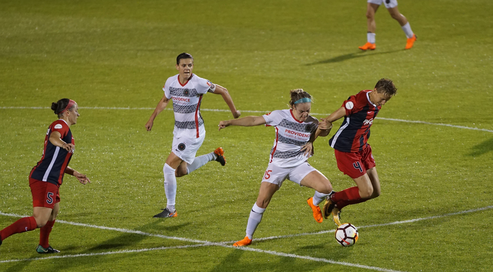

In an era of unprecedented domination by two of the game’s all-time greats, it has required something very special to break the duopoly of Cristiano Ronaldo and Lionel Messi. Robert Lewandowski provided just that.
One of the world’s finest players for several years, the 32-year-old moved to another level across 2019 and 2020, inspiring Bayern Munich to a domestic and European clean sweep and topping the scoring charts in both the Bundesliga and the UEFA Champions League.
Now he has become the first attacker, besides the aforementioned Messi and Ronaldo, to win FIFA’s top award since Ronaldinho in 2005.
